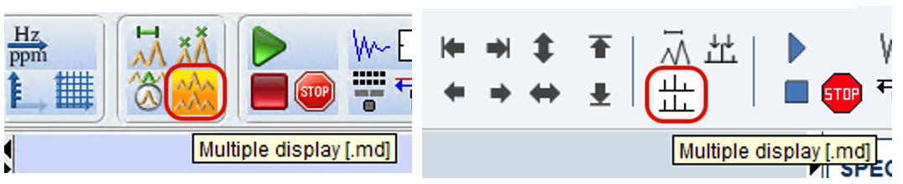
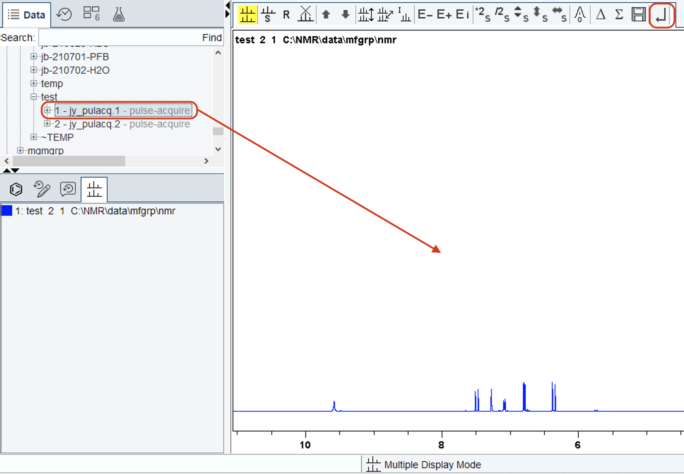
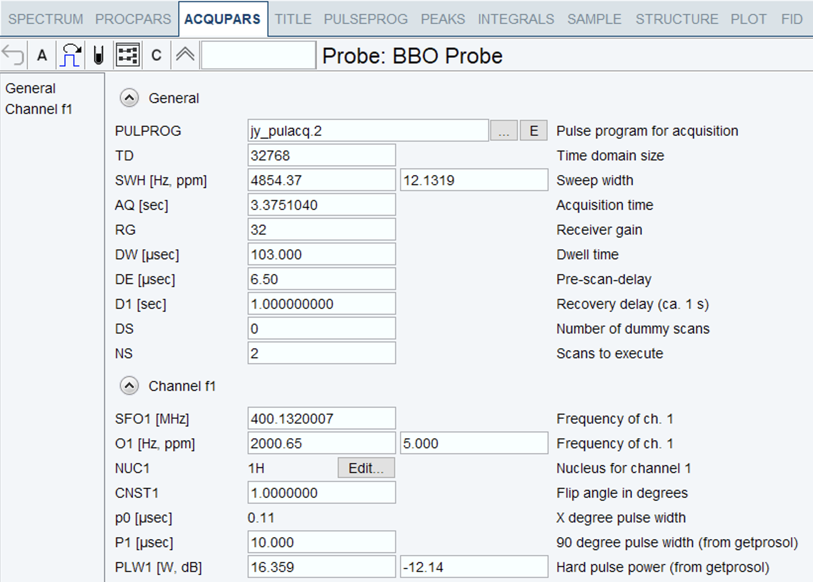
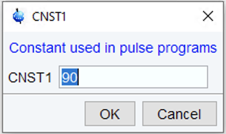

In this post, we’ll take a look at how we can modify and define parameters (such as pulse lengths) using mathematical expressions.
(This is part 5 of a series of posts on pulse programming in TopSpin. For the other parts, see the table of contents here.)
A new version…
Before going on, use the iexpno command in TopSpin to create a new experiment with the next expno. All experimental parameters will be carried over from the previous experiment.
Then, create a new version of your pulse programme with the suffix .2. The steps to do this are described in the previous post. Save the pulse programme, and make sure to hit Set PULPROG.
Changing the flip angle
We previously mentioned that the flip angle \(\beta\) is given by
\[\beta = \omega_1 t_\mathrm{p}.\]
As long as we keep \(\omega_1\) (which is indirectly specified by PLW1) constant, then we can control the flip angle by changing \(t_\mathrm{p}\), which is P1.
Let’s now change our pulse programme to use a 45° pulse instead of a 90° pulse. One way to do that would be to go into the ased screen and change P1 to half of its original value. However, that would mean that when setting up the experiment, we can’t use getprosol (or we would have to divide it by 2 every time)!
If we always want the flip angle to be 45°, then what we should do is to change the pulse programme. To be specific, we can change p1 to p1*0.5, so that the line with the pulse now becomes
(p1*0.5 ph1):f1Run the experiment. You should find that the spectrum is qualitatively very similar: not much has changed. But quantitatively, we expect that the 45° degree pulse will have created less transverse magnetisation than the 90° pulse (by a factor of \(\cos(45^\circ) \approx 0.71\)).
It’s hard to judge this by eye, but we can ascertain this by using TopSpin’s multiple display mode to superimpose two spectra. In the TopSpin command line, type .md, or click the appropriate button in the top panel (left is TopSpin 3, right TopSpin 4):

Then, drag the original, first dataset from the left-hand sidebar into the main part of TopSpin:

TopSpin will now show you both datasets together, superimposed. Verify that the second dataset (with the 45° pulse) has a lower intensity than the first. (If you’re not familiar with this mode, it’s a good idea to also have a play around with the row of buttons at the top to see what you can do with them.) When you’re done, type .ret into the TopSpin command line, or click the right-most “return” button which looks like an arrow (boxed above).
A user-defined flip angle
Now, we have hardcoded a flip angle inside our pulse programme: anybody who uses this will end up with a 45° pulse (as long as their p1 corresponds to a 90° pulse, which it almost certainly will). But perhaps we should like to let the user choose their own flip angle. Parameters like these, which are neither pulses (the P family) nor delays (the D family), can be specified as constants (CNST). TopSpin allows you to specify constants ranging from CNST0 to CNST63.
First, let’s change the hardcoded p1*0.5 to just p0, where p0 is going to be the pulse width that we end up with. (Recall that p1 is always the 90° pulse, which is why we’re using a different number here.) Suppose our flip angle is specified as CNST1 in degrees. Then, the following relationship must hold: p0 = p1 * cnst1 / 90.
In order to enforce this relationship, we can add it as a line before the pulse programme begins (i.e. before ze). Definitions such as these must be enclosed in double quotes. So, add the following line before the ze line:
"p0 = p1 * cnst1 / 90"(Perhaps now is a good time to add some comments at the bottom of the file to explain what p0 and cnst1 are, so that the user can see it in the ased file!)
Our pulse programme should now look something like the following:
; jy_pulacq.2
; pulse-acquire sequence
; Jonathan Yong, 5 July 2021
; .1 - enabled dummy scans by changing zd to ze
; .2 - enable variable flip angle through cnst1
#include <Avance.incl>
"p0 = p1 * cnst1 / 90"
ze
1 d1
(p0 ph1):f1
go=1 ph31
wr #0
exit
ph1 = 0 2
ph31 = 0 2
;p1 : 90 degree pulse width (from getprosol)
;pl1 : hard pulse power (from getprosol)
;p0 : X degree pulse width
;cnst1 : flip angle in degrees
;d1 : recovery delay (ca. 1 s)and the ased screen should be similar to this:

ased screen with a variable flip angle.While in this screen, you should set cnst1 to several different values. Notice how every time you change cnst1, the value of p0 is automatically updated: this is a result of the relationship that we specified. The result of our work is that:
- The user can always get
p1andpl1usinggetprosol, and need not adjust it manually themselves. - The flip angle can be chosen at will by setting
cnst1. - The pulse programme automatically calculates the correct pulse width corresponding to the user’s chosen flip angle.
Actually, if you just want to see or modify the value of one parameter, you don’t have to go to the ased screen and wade through the entire list. You can directly type cnst1 into the TopSpin command line, and TopSpin will show you a dialog box containing the current value of cnst1. If you want to change it, you can then enter a new value there.

cnst1 from the TopSpin command line.Play around with this a bit: create a few different experiments with the iexpno command, and run each with different flip angles between (say) 0° and 360°. Then use multiple-display mode (.md) to compare the resulting spectra. You can even integrate the spectrum and plot the intensity as a function of the flip angle (it should have a sine profile).
When you’re ready, move on to the next post, where we’ll introduce a more advanced topic: pulsed field gradients.